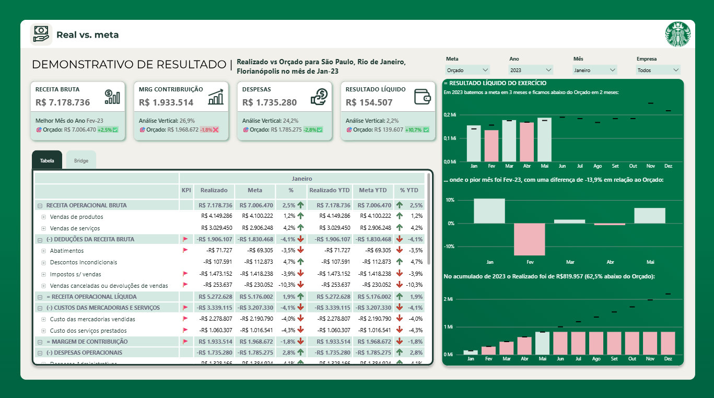
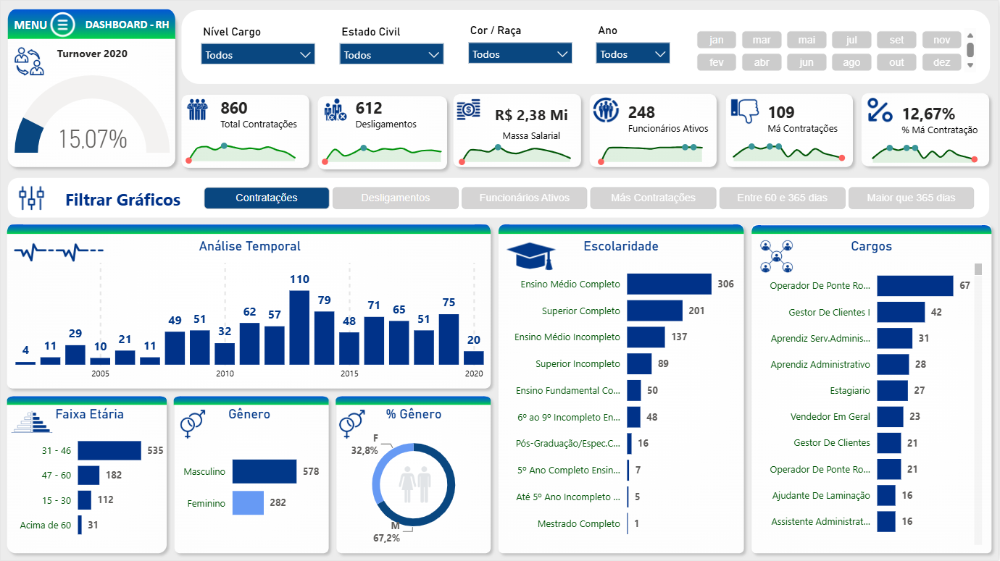
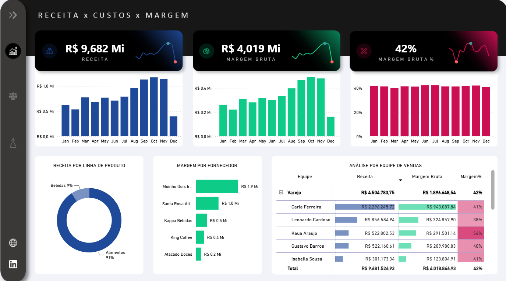

Projetos em destaque
Dashboards que reproduzem situações reais de negócio, montados com dados fictícios. Clique para explorar a versão interativa.

Acompanhamento diário do desempenho de vendas para gestores comerciais, com visão por gerência, área e vendedor.
- Venda vs. meta com projeção do fechamento do mês e dias úteis restantes
- Comparação com o mês anterior e com o mesmo mês do ano anterior
- Positivação, carteira de clientes, clientes novos, perdidos e recuperados
- Representatividade de marcas com curva ABC / Pareto

DRE gerencial com real vs. meta, variações mensais e indicadores acumulados no ano, para acompanhar o resultado e agir rápido nos desvios.

Turnover, contratações, desligamentos e perfil dos colaboradores em um só lugar, para apoiar decisões de gestão de pessoas.

Receita, margem bruta e margem percentual por produto, fornecedor e equipe comercial, para descobrir onde a empresa ganha e onde perde dinheiro.